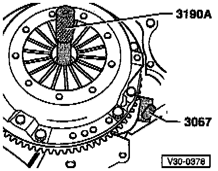
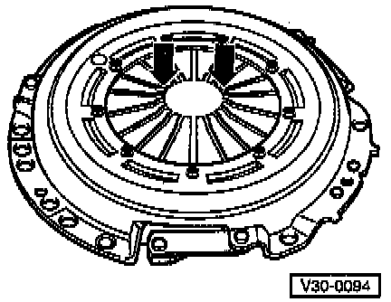

Replacement
NOTE:^ Transmission removed
^ Make sure that the correct replacement clutch disc and pressure plate are selected according to the engine code, refer to Transmission Identification.
CAUTION: Always replace a clutch disc or pressure plate that has loose or damaged rivets.

COMPONENT NOTES AND INFORMATION
1 Flywheel
- Make sure centering dowel pins fit tightly
- Contact surface for clutch disc must be free of grooves, oil and grease
- Removing/installing, refer to Engine.
2 Clutch disc
- Diameter, refer to Transmission Identification.
- Note installation position: spring cage faces toward pressure plate
- Centering, refer to Fig. 1, below.
NOTE:
^ Before installing clutch disc remove corrosion from input shaft splines and clutch disc hub splices, clean and apply only a very thin coating of grease, Part No. G 000 100, to the splines of the input shaft only.
^ Place the clutch disc on the input shaft and make sure it moves back and forth freely.
^ Remove excess grease.
3 Pressure plate
- Removing and installing, refer to Fig. 1, below
- Check ends of diaphragm spring, refer to Fig. 2, below
CAUTION:
^ Pressure plates are protected against corrosion.
^ Only the clutch disc contact surface may be cleaned.
4 12 point bolt
- Tightening torque: 20 Nm (15 ft lb)
- Loosen and tighten in stages evenly and in a diagonal pattern

Fig. 1 Centering clutch disc and removing and installing pressure plate
- Loosen and tighten bolts in stages, evenly and diagonally.
- When removing, reverse position of flywheel retainer 3067.
CAUTION:
^ Pressure plate contact surface and clutch disc must make full contact with flywheel.
^ Tighten mounting bolts evenly in a diagonal pattern to prevent damage to the centering holes in the pressure plate housing and the centering pins in the flywheel.

Fig. 2 Checking diaphragm spring
- Check ends of diaphragm spring -arrows- for wear.
- Maximum wear: up to half of original diaphragm spring thickness